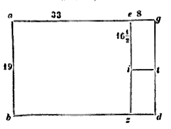
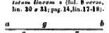
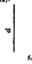
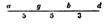
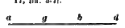
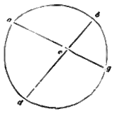

DISTINCTIO I — PROLOGUE, PISAN METROLOGY & RECTANGULAR FIELDS¶
Here Begins the Practice of Geometry Composed by Leonardo of Pisa, of the Sons of Bonaccio, in the Year 1220
Source Text: fibonacci:pg-prol, fibonacci:pg-1 (Boncompagni Vol. II, pp. 1–18 · Cod. Urb. Lat. 292, fol. 1r–11v) · Latin (1220 / Boncompagni 1862) · Summary · GEOMETOR Notes
Epistle and Prologue to Master Dominicus¶
Latin Locus: Prologus (p. 1) · Commentary: Notes on the Prologue
You requested, my friend Dominicus and reverend Master, that I compose for you a book on the practice of geometry; constrained therefore by your friendship and yielding to your entreaties, I have now published for your sake a work begun long ago, so that both those who wish to work in measurements according to geometrical demonstrations and those who wish to proceed according to common custom, as it were in a lay manner, may find perfect instruction across the eight distinctions of this art, which are unfolded below. The first of these is how the breadths of fields having four equal angles are multiplied in three ways into their lengths. The second is on certain geometrical rules and on the finding of square roots, so far as I thought necessary for those who wish to work by geometrical reasons alone. The third is on finding the areas of all fields of whatever form. The fourth is on the division of all fields among co-heirs (consortes). The fifth is on finding cube roots. The sixth is on finding the areas of all solid bodies of whatever figure, which are contained by three dimensions, namely length, breadth, and depth. The seventh is on finding the lengths of planes and the heights of elevated things. The eighth is on certain geometrical subtleties. Yet before I arrive at the doctrine of these distinctions, I thought it necessary to set down beforehand certain introductory matters. Therefore, having undertaken to complete these things according to the capacity of my intellect and trusting in your correction, I have taken care to address this work to your mastery, so that whatever in it needs emendation may be corrected by your wisdom.
f. 0008 · p. 1
Introductory Definitions¶
Latin Locus: Introductoria (pp. 1–3) · Commentary: Notes on Definitions & Pisan Metrology
A point is that which has no dimension, that is, which cannot be divided. A line is length lacking breadth, whose extremities are points. A straight line is that which is drawn straight from point to point. A surface is that which has breadth and length only, whose boundaries are lines; and it is plane when it is spread out evenly within its boundaries upon straight lines. A plane angle is the inclination of two lines touching one another in a plane, when they do not lie in a straight line; and it is rectilinear when the lines containing the angle are straight. And when a straight line stands upon a straight line and makes two angles about itself equal to one another, each angle is called right; and the line standing upon that on which it stands is called cathetus or perpendicular. An ample or obtuse angle is one that is greater than a right angle. An acute angle is found to be less than a right angle. And a boundary is the end of a thing. A figure is that which lies under one or more boundaries. A rectilinear figure is surrounded by straight lines. Trilateral figures are those contained under three straight lines. Quadrilateral figures are those encompassed by four straight lines. Multilateral figures are those comprehended under more than four sides. A circle is a plane figure contained under one line, which is called the circumference or periphery, within which there is a point from which all straight lines drawn to the circumference are equal to one another; and that point is called the center of the circle. And when any straight line is drawn through the center and terminated at both sides of the periphery,
f. 0009 · p. 2
that straight line is called the diameter of the circle, which divides the circle into two equal portions, each of which is called a semicircle. A segment of a circle is a figure contained under the periphery of the circle and a straight line, whether it be greater or less than a semicircle. A sector of a circle is a plane figure contained under two straight lines drawn from the center to the periphery and the arc of the periphery comprehended by those straight lines. Straight lines which are in the same surface and, produced indefinitely on both sides, never meet one another are called parallel; if any straight line falls upon them, it will make the two interior angles on one side right or equal to two right angles, and the exterior angle is equal to the interior angle opposite to it, and the alternate angles are equal to one another: as if upon two parallel lines .a.b. and .g.d. there falls a straight line .e.z.; the angles .b.i.z. and .i.z.d. are either right or equal to two right angles. The same holds for angles .a.i.z. and .i.z.g.; and the exterior angle .e.i.b. is equal to the interior angle .i.z.d. opposite to it; and angle .a.i.z. is equal to that which lies alternate to it, namely angle .i.z.d.; hence angle .b.i.z. is also equal to angle .i.z.g., as is shown in geometry. Many things indeed must be known by those who wish to proceed according to geometrical subtlety in the measurement and division of bodies, which are clearly demonstrated in Euclid. Among these are: to construct an equilateral triangle upon a given finite straight line; to bisect a given angle or line; to erect a perpendicular upon a given straight line from a given point on it; and to draw a perpendicular to a given straight line from a given point not on it. Also, a straight line standing upon a straight line makes two angles about itself equal to two right angles. And when two straight lines intersect each other, the two angles vertically opposite are equal to one another. And when a straight line falls upon two straight lines and makes on one side two interior angles less than two right angles, if those straight lines are produced on that side where the angles are less than two right angles, they will meet one another. And if two straight lines join the ends of two equal and parallel straight lines, they themselves will be equal and parallel to one another. And upon a given straight line, at a given point on it, to construct a rectilinear angle equal to a given rectilinear angle. And through a given point to draw a straight line parallel to a given straight line. And triangles and parallelograms constructed on equal bases or on the same base between the same parallels are equal to one another, triangle to triangle and parallelogram to parallelogram, and the parallelogram is double the triangle. A parallelogram is called a figure which has opposite sides equal and parallel, whose opposite angles are equal to one another, and a diameter also cuts it into two similar and equal triangles; also, if any side of a triangle be produced on any side, it will make an angle outside the triangle equal to the two opposite interior angles within the triangle; and the three angles of any triangle are equal to two right angles. And things equal to the same thing are equal to one another. And if equals be added to equals, the wholes are equal. And if equals be taken away from equals, what remain are equal. And if equals be added to unequals, the wholes are unequal. And if equals be taken away from unequals, the remainders are unequal. And doubles of the same thing are equal to one another, and halves of the same thing are equal to one another; and things fitted upon one another are equal to one another. And the whole is greater than its part. And two straight lines do not enclose a space. Without all these, and without the finding of roots, those who wish to proceed according to the common manner
f. 0010 · p. 3will be able to proceed sufficiently in the proper place with the things which I shall show below.
The Pisan Pertica and Its Parts¶
Latin Locus: De Pertica Pisana (pp. 3–5) · Commentary: Notes on the 6 × 6 Pertica Lattice
These things having been thus determined, I have proposed to explain briefly with what measures fields are measured. For some are accustomed to measure fields with cubit measures, or ells, or paces; others with rods (perticae), or with any measurable instrument whatsoever; yet each of the above-written measures is to be understood sometimes as linear, sometimes as superficial. The linear is that which consists in length alone; the superficial is that which has as much in length as in breadth, existing square in itself and consisting of four right angles. From these superficial measures some in multiplying gather a certain quantity which they call iugerum, or aripennium, or carruca, or tornatura, or cultura, or other quantities known by other names. But I, wishing to walk according to the custom of the Pisans, will take my beginning from the pertica. The linear Pisan pertica consists of six linear feet, and the linear foot consists of eighteen linear points (unciae). Also the square, that is superficial, pertica ABDC consists of six superficial feet. For the superficial foot ABP2P1 (bounded by P1P2) has one pertica in length and one-sixth of a pertica in breadth. The superficial uncia has one pertica in length and one-eighteenth part of the length of a foot in breadth. Wherefore the superficial foot is one-sixth of the superficial pertica, and the superficial uncia is one-eighteenth of the superficial foot, or one-hundred-and-eighth part of the superficial pertica. Likewise, the superficial pertica contains in itself thirty-six denarii of measure; and so six denarii belong to each foot, and the superficial uncia is one-third of a denarius. The denarius CU1U3U2 at C (by U1, U2) has one foot in length and one in breadth, and thus the square denarius consists of four right angles and is the thirty-sixth part of the whole superficial pertica (whose medians EF and GH meet at I). Four superficial perticae make a measure called a scala; five and a half make one panorum. And sixty-six square perticae make a measure called a stariorum, by which fields are bought and sold in the bishopric of Pisa, and to which measure I shall show how to gather the embada, that is, the areas of fields. From the aforesaid stariorum multiplied is gathered another sum called a modiorum, for a modiorum contains twenty-four staiora. Also, sixteen and a half scalae make one stariorum, and one scala is one-eleventh of two-thirds of a stariorum, or twelve soldi of measure. Again, twelve panora make one stariorum; so a panorum is one-twelfth of a stariorum, and is sixteen soldi and a half, while a stariorum is one hundred ninety-eight soldi. Fields and spaces of houses are measured with linear perticae, feet, and unciae; but areas of fields are gathered in stariora, panora, soldi, and denarii, or parts of a panorum, while spaces of houses are gathered in scalae, parts of a scala, soldi, and denarii. Having explained these, it remains to show what results from multiplying perticae and their parts. Whatever is multiplied into a pertica or perticae yields the same kind: if perticae are multiplied into perticae, perticae result, as three perticae into nine perticae make 27 perticae. And if perticae are multiplied into panora, or panora into perticae, panora result: as three perticae into nine panora, or nine panora into three
f. 0011 · p. 4perticae, make 27 panora; and the same is understood of multiplying perticae into scalae, stariora, and modiora, or conversely. Again, feet multiplied into perticae, or perticae into feet, will be feet, that is half-soldi: for example, three feet into nine perticae, or nine perticae into three feet, will be 27 feet, namely 13 and \(\frac{1}{2}\) soldi. Likewise, unciae multiplied into perticae, or perticae into unciae, make unciae, or thirds of a denarius: for example, 4 unciae into 9 perticae, or conversely, rise to 36 unciae, that is, 12 denarii of measure. Moreover, feet multiplied into feet rise to denarii: for example, three feet into five feet rise to 15 denarii. Again, feet multiplied into unciae make eighteenths of one denarius; and unciae multiplied into unciae make eighteenth parts of an eighteenth part of one denarius, namely three-hundred-twenty-fourths of a denarius. And note that the measures multiplied are always linear, and those gathered from their multiplication are superficial. Furthermore, 100 superficial perticae are one and a half stariora plus one pertica; a hundred scalae are six stariora plus one scala; and a hundred panora are \(8\frac{4}{6}\) stariora. Also, since \(16\frac{1}{2}\) soldi are one panorum, 33 soldi are 2 panora, \(49\frac{1}{2}\) soldi are 3 panora, 66 soldi are 4 panora, \(82\frac{1}{2}\) soldi are 5 panora, and 99 soldi are 6 panora. Likewise, \(5\frac{1}{2}\) scalae are 4 panora, and 11 scalae are 8 panora. Note that I mention scalae because some are accustomed to gather land measures in scalae and make panora from them; hence I leave aside the labor of scalae here and shall teach how to gather land measure by stariora, panora, soldi, and denarii. Therefore, when \(5\frac{1}{2}\) perticae are multiplied into any number of perticae, as many panora result as there were perticae into which \(5\frac{1}{2}\) perticae were multiplied; hence 11 perticae yield twice as many panora, \(16\frac{1}{2}\) yield thrice, 22 yield fourfold, \(27\frac{1}{2}\) fivefold, 33 sixfold, \(38\frac{1}{2}\) sevenfold, 44 eightfold, \(49\frac{1}{2}\) ninefold, 55 tenfold, and \(60\frac{1}{2}\) elevenfold. Likewise, if 66 perticae are multiplied into any number of perticae, twelve times as many panora come out as those perticae, that is, as many stariora as those perticae; wherefore 132 perticae multiplied into any perticae make twice as many stariora, and so you may understand for similar cases. And this is what I said above about panora, stariora, and modiora multiplied into perticae: for multiplying 22 perticae into 3 perticae is the same as multiplying 4 panora into 3 perticae, and multiplying 132 perticae into any perticae is the same as multiplying 2 stariora into the same. And note that one pertica in breadth and \(5\frac{1}{2}\) in length is one panorum; and one pertica in breadth and double \(5\frac{1}{2}\) in length is double one panorum; and so understand for triple, quadruple, and any multiple of \(5\frac{1}{2}\) perticae. Likewise, one pertica in breadth and 66 in length is one stariorum.
f. 0012 · p. 5

Wherefore two perticae at the head and 66 perticae in length are 2 stariora; and 3 perticae at the head and 66 in length are 3 stariora; and so in like cases. Again, double one pertica at the head and half of 66 perticae in length is one stariorum; and triple one pertica at the head and a third of 66 perticae in length is likewise one stariorum; and understand this for any other multiple of one pertica at the head and the corresponding part of 66 perticae in length. Hence if it be asked, when 6 perticae are at the head of some square field, how many perticae will be in its length to complete a stariorum: since 6 is the sixfold of one pertica, take one-sixth of 66 perticae, namely 11, and you will have the length of that field. Likewise, if there are 7 perticae at the head, a stariorum is completed if in length you have one-seventh of 63 perticae, giving 9 perticae; and from the three perticae remaining from 63 up to 66 make feet, which will be 18 feet; divide these by 7, and 2 feet come out with 4 feet remaining to be divided; from these make unciae, giving 72 unciae; divide them by 7, and \(10\frac{2}{7}\) unciae come out. Thus we have 9 perticae, 2 feet, and \(10\frac{2}{7}\) unciae for \(\frac{1}{7}\) of 66 perticae: these things are very useful, as will be demonstrated in their place.
f. 0012 · p. 5
Here Begins the First Distinction, on Multiplying the Breadths of Square Fields into Their Lengths¶
Latin Locus: Distinctio I (pp. 5–18) · Commentary: Notes on Distinctio I
If you wish to measure an equilateral and equiangular quadrilateral field .a.b.c.d. having 2 perticae in each side, I say that its area is that which is gathered from the multiplication of side .a.c. into side .a.b. contiguous to it, namely two perticae into two; and thus its area is 4 superficial perticae. Let lines .a.b. and .c.d. be divided into two equal parts at points .e., .f., and draw line .e.f.. Likewise let lines .a.c. and .b.d. be divided into two equal parts at points .g., .h., and draw line .g.h.. Thus quadrilateral .a.b.c.d. will be divided into four equal right-angled squares, each of which has one pertica in every side; and thus there are 4 superficial perticae in the whole area of quadrilateral .a.c.d.b.. For straight line .a.e. is equal and parallel to straight line .c.f., and parallel to line .a.c., and .e.f. is equal and parallel to line .b.d., since it is parallel and equal to line .a.c.. Similarly line .g.h. will be found parallel and equal to each line .a.b. and .c.d.. And since line .e.f. is parallel to line .a.c., and line .a.e. to line .c.f., angle .a.e.f. is equal to angle .a.c.f. opposite to it; that under .a.c.f. is right, hence that under .a.e.f. is right; by the same reasoning angle .e.f.c. is shown to be right, since it is equal to the right angle .c.a.e.. Wherefore quadrilateral .e.a.c.f. is right-angled and contains in itself two square perticae, one of which is quadrilateral .e.a.g.i. and the other .i.g.c.f.. For by the aforesaid all angles are shown to be right, including the angles at .g. and .h.. For surface .e.c. contains half of surface .b.c.; wherefore surface .e.c. is equal to surface .e.d.: therefore the area of the whole surface .a.d. is 4 perticae, as I said before. Likewise let there be a long rectangular quadrilateral .a.b.g.d. having 2 perticae in its opposite heads, namely .a.g. and .b.d., and 3 perticae in each of the remaining sides. I say that its area is 6 perticae, gathered from multiplying one head into one side, namely 2 into 3: to demonstrate this, divide .a.g. and .b.d. into two equal parts
f. 0013 · p. 6

at points .e., .z. and join .e.z.; and divide each of .a.b. and .g.d. into three equal parts at .i., .t. and .k., .l., and join .i.t. and .k.l.; then by the doctrine of the square above, all .a.b.g.d. is shown to be divided into six equal right-angled quadrilaterals, each containing one pertica in every side. Finally, having shown these things by demonstrations, let us show how the breadths of the said fields ought to be multiplied by their length. If we wish to multiply 7 perticae in breadth by 23 perticae in length, first multiply 7 perticae by 22 perticae, namely by 4 panora, whence 28 panora result by the above reasoning; then multiply the one pertica remaining from 23 by 7, making 7 square perticae; of which \(5\frac{1}{2}\) perticae are one panorum, and the \(1\frac{1}{2}\) pertica remaining is \(4\frac{1}{2}\) soldi; and thus we have in sum 29 panora and \(4\frac{1}{2}\) soldi of measure, that is, 2 stariora, 5 panora, and \(4\frac{1}{2}\) soldi. Likewise, if you wish to multiply 13 perticae by 31 perticae, first multiply 11 perticae, namely 2 panora, by 31 perticae, making 62 panora, namely double 31; then multiply the 2 perticae remaining from 13 perticae by 31 perticae, making 62 square perticae, which are 11 panora and 18 denarii; add these to the 62 panora found, making 73 panora and 18 denarii; divide by 12, since a stariorum is 12 panora, and 6 stariora, 1 panorum, and 18 denarii of measure come out. Likewise, if you wish to multiply 19 perticae by 41 perticae, first multiply 19 perticae by 33 perticae, giving 19 half-stariora, namely \(9\frac{1}{2}\) stariora; then multiply the 8 remaining from 41 by \(16\frac{1}{2}\) perticae, giving 24 panora; added to \(9\frac{1}{2}\) stariora, these make \(11\frac{1}{2}\) stariora. Also, since \(2\frac{1}{2}\) perticae remain after taking \(16\frac{1}{2}\) perticae from 19 perticae, multiply those \(2\frac{1}{2}\) perticae again by the aforesaid 8 perticae, making 20 superficial perticae, of which \(16\frac{1}{2}\) are 3 panora and the remaining \(3\frac{1}{2}\) are \(10\frac{1}{2}\) soldi; adding 3 panora and \(10\frac{1}{2}\) soldi to \(11\frac{1}{2}\) stariora makes 11 stariora, 9 panora, and \(10\frac{1}{2}\) soldi. The cause of this multiplication I wish to declare by demonstrations. Let there be a long quadrilateral .a.b.g.d. containing 19 perticae in each head, .a.b. and .g.d., and 41 perticae in each of the longer sides, .a.g. and .b.d.; from side .a.g. let line .a.e. be taken consisting of 33 perticae, so .e.g. will remain 8 perticae. Likewise from line .b.d. let line .b.z. be taken equal to line .a.e., and join .e.z.; then .e.z. will be 19 perticae, since it is equal and parallel to both .a.b. and .g.d., and .z.d. is equal to line .e.g., namely 8 perticae. Again from lines .e.z. and .g.d. let straight lines .e.i. and .g.t. be taken, each of \(16\frac{1}{2}\) perticae, and join .i.t.; then line .i.t. will be equal to both .e.g. and .z.d.. And when lines .e.i. and .g.t., each of \(16\frac{1}{2}\) perticae, are taken away from .e.z. and .g.d., each of .i.z. and .t.d. will remain \(2\frac{1}{2}\) perticae. Therefore when we multiplied 19 perticae above into 33, we had the area of quadrilateral .a.z., namely \(9\frac{1}{2}\) stariora, and quadrilateral .e.z.d.g. remained to us from all .a.b.g.d.; then when we multiplied 8 into \(16\frac{1}{2}\) perticae, namely into 3 panora, we had 2 stariora for the area of quadrilateral .e.i.t.g.. Again, when we multiplied \(2\frac{1}{2}\) perticae into 8 perticae, we had 20 square perticae, namely 3 panora and \(10\frac{1}{2}\) soldi of measure, for the area of .i.z.d.t.. For the three quadrilaterals .a.z., .e.t., and .t.z. equal the whole .a.b.g.d.; and this we wished to demonstrate. Likewise, if
f. 0014 · p. 7you wish to multiply 25 perticae by 52 perticae, first multiply 22 perticae of those 25 perticae, namely 4 panora, by 52 perticae, giving 52 thirds of one stariorum because of the 4 panora, which are one-third of one stariorum. For 52 thirds of a stariorum are \(17\frac{1}{3}\) stariora; then multiply the 3 perticae remaining from 22 up to 25 by \(49\frac{1}{2}\) perticae of those 52 perticae, namely by 9 panora, giving 27 panora; added to \(17\frac{1}{3}\) stariora, these give 19 stariora and 7 panora. After this, multiply those 3 perticae by \(2\frac{1}{2}\) perticae, which are from \(49\frac{1}{2}\) up to 52, giving \(7\frac{1}{2}\) perticae, namely one panorum and 6 soldi; and thus you will have in sum 19 stariora, 8 panora, and 6 soldi: or otherwise multiply 25 by 52, giving 1300 perticae, which are 13 stariora with as many half-stariora and 13 perticae besides, namely 19 stariora, 8 panora, and 6 soldi, as I said before. Likewise, if you wish to multiply 31 perticae by 69 perticae, first multiply 31 perticae by 66 perticae, namely by one stariorum, making 31 stariora. Also multiply 3, which remains from 66 up to 69, by 31 perticae, making 93 perticae, which are 17 panora minus 18 denarii; and thus we have in sum 32 staiora and 5 panora minus 18 denarii. Likewise, if you wish to multiply 43 perticae by 85 perticae, first multiply 43 perticae by \(82\frac{1}{2}\) perticae, namely by 15 panora, making fifteen times 43 panora, namely 43 staiora with as many fourths, that is \(53\frac{3}{4}\) staiora; then multiply \(2\frac{1}{2}\) perticae, which remain from \(82\frac{1}{2}\) up to 85, by 43 perticae; yet multiply first those \(2\frac{1}{2}\) perticae by 33 perticae, namely by 6 panora, making 15 panora; add these to \(53\frac{3}{4}\) stariora, making 55 stariora; and multiply again those \(2\frac{1}{2}\) perticae by 10 perticae, which remain from 33 up to 43, making 25 perticae, which are 4 panora and 9 soldi; and thus you will have for the sought multiplication 55 stariora, 4 panora, and 9 soldi. Likewise, if you wish to multiply 54 perticae by 113 perticae, first multiply 54 perticae by 110 perticae, namely by 20 panora, making 1080 panora; divided by 12, these return 90 stariora; then multiply the 3 perticae remaining from 110 up to 113 by 54 perticae, that is, by 9 panora and \(4\frac{1}{2}\) perticae, making 27 panora and \(13\frac{1}{2}\) perticae, that is, 29 panora and \(7\frac{1}{2}\) soldi; added to 90 stariora, these make 92 stariora, 5 panora, and \(7\frac{1}{2}\) soldi. Likewise, if you wish to multiply 72 perticae by 149 perticae, first multiply 66 perticae by 149 perticae, making 149 stariora; then multiply the 6 perticae remaining from 66 up to 72 by 149 perticae, yet first by 132, namely by 2 stariora, and afterward by 17 perticae, which remain from 132 up to 149, making 12 stariora and 102 perticae, that is, 13 stariora, 6 panora, and 9 soldi; added to 149 stariora, these make 162 stariora, 6 panora, and 9 soldi.
Now enough has been said of multiplying whole perticae into whole perticae; next we wish to speak of multiplying the same with feet. And because when a foot is multiplied into any perticae, as has been said, as many half-soldi come as there are perticae: if 2 feet are multiplied into perticae, as many soldi will come as there are perticae. And if 3 feet are multiplied into perticae, as many soldi will come as there are perticae, and as many half-soldi besides. And if 4 feet are multiplied into perticae, doubled soldi will come. And from 5 feet multiplied into perticae likewise come doubled soldi of those perticae and as many halves besides. And from multiplying feet into feet come denarii, as we said above. If you wish to multiply 12 perticae and 1 foot by 25 perticae and 2 feet, multiply
f. 0015 · p. 8first 12 perticae by 25 perticae, making 54 panora and 9 soldi: keep the panora in your right hand and the soldi in your left hand; then multiply 1 foot by 25 perticae, making \(12\frac{1}{2}\) soldi; add these to the 9 soldi, making 21 soldi in the left hand; and keep with your feet the 6 denarii which are over those 21 soldi. The signs of the feet are these: placing the toe of the left foot upon the toe of the right signifies 1; placing the toe of the left upon the instep of the right, 2; touching the right heel with the toe of the left foot, 3; bringing the left foot behind the right and touching the toe of the right foot from the outer side with the toe of the left, 4; from the same side touching the ankle or instep of the right with the toe of the left, 5; the other five signs are in order in the same way by touching the left foot with the right; and the eleventh sign is when the heel of the right foot is placed upon the instep of the left foot: we need no more signs, since 12 denarii make one soldus, which soldus is kept in the left hand. Of the signs of the hands nothing need be said, since all who know the abacus know them. Whence let us return to the proposition: multiply again 2 feet by 12 perticae, making 12 soldi; added to the \(21\frac{1}{2}\) soldi saved, these make \(33\frac{1}{2}\) soldi. Also multiply 1 foot into 2 feet, making 2 denarii; add these to the 6 denarii kept with the feet, making 8 denarii, which keep again with the feet; and thus we will have 54 panora, 33 soldi, and 8 denarii, namely 4 stariora, 8 panora, and 8 denarii for the sought multiplication. Likewise, if you wish to multiply 17 perticae and 2 feet by 36 perticae and 3 feet, first multiply 17 perticae by 36 perticae, making 9 stariora, 3 panora, and \(4\frac{1}{2}\) soldi: keep the stariora in your mind, the panora in your right hand, the soldi in your left, and the denarii on your feet; upon all these add the multiplication of 2 feet into 36 perticae, namely 36 soldi, and the multiplication of 3 feet into 17 perticae, namely \(25\frac{1}{2}\) soldi, and the multiplication of 3 feet into 2 feet, namely 6 denarii; and whenever soldi grow for you in the left hand, make panora from them as often as you can; and thus you will have in sum 9 stariora, 7 panora, and 6 denarii. Likewise, if you wish to multiply 26 perticae and 4 feet by 43 perticae and 5 feet, first multiply 26 perticae by 43 perticae, which are 16 stariora, 11 panora, and \(4\frac{1}{2}\) soldi. Also multiply 4 feet, namely 2 soldi, by 43 perticae, making 86 soldi, namely 5 panora and \(3\frac{1}{2}\) soldi; also multiply 5 feet, namely \(2\frac{1}{2}\) soldi, by 26 perticae, making 65 soldi; also multiply 4 feet by 5 feet, making 20 denarii; joining these four multiplications into one, they make in sum 17 stariora, 8 panora, 8 soldi, and 8 denarii.
If you wish to multiply 28 perticae, 1 foot, and 7 unciae by 53 perticae, 5 feet, and 12 unciae: first multiply 28 perticae and 1 foot by 53 perticae and 5 feet, making 22 stariora, 11 panora, 11 soldi, and 5 denarii; then multiply 7 unciae, namely \(2\frac{1}{3}\) denarii, by 53 perticae, yet first by 48, namely by 4 soldi, and afterward by 5 denarii, making 10 soldi and \(3\frac{2}{3}\) denarii; also multiply 12 unciae, namely 4 denarii, by 28 perticae, first by 24, namely by 2 soldi, and afterward by 4, making 9 soldi and 4 denarii; after this multiply 7 unciae by 5 feet and 12 unciae by 1 foot, making 47 sixths of one uncia, namely \(2\frac{11}{18}\) denarii; and multiply 7 unciae by 12 unciae, making \(\frac{84}{324}\) of one denarius, of which no mention need be made since it is not 1 uncia: therefore add the remaining multiplications into one, and they return for the whole sum 23 stariora, 14 soldi, and 9 denarii. Likewise, if you wish to multiply 37 perticae, 2 feet, and \(5\frac{1}{3}\) unciae by 67 perticae, 4 feet, and \(10\frac{1}{4}\) unciae, first multiply 37 perticae,
f. 0016 · p. 92 feet, and 5 unciae by 67 perticae, 4 feet, and 10 unciae; they will be 38 stariora, 4 panora, 8 soldi, and 5 denarii and a little more; upon which add the multiplication of a third of one uncia into 67 perticae, 4 feet, and \(10\frac{1}{4}\) unciae, namely a little more than \(22\frac{1}{2}\) unciae. And you will also add the multiplication of a fourth of one uncia into 37 perticae, 2 feet, and \(5\frac{1}{3}\) unciae, namely a little less than \(9\frac{1}{3}\) unciae; they will be in sum 38 stariora, 4 panora, 9 soldi, and 5 denarii a little less. And thus by using frequent study on the multiplications written above you will be able to have knowledge of like cases.
If you wish to multiply 17 perticae and 3 feet into 28 perticae and 4 feet, you shall place the feet of the longer side under the feet of the shorter side, and the perticae under the perticae, namely 4 feet under 3 feet; and behind those feet put 28 perticae under 17 perticae toward the left behind, as is shown here; and you shall multiply 3 feet by 4 feet, making 12 denarii; because when we multiply feet into feet, denarii come out of the multiplication, as has been said. Keep therefore 1 soldus in your left hand for those 12 denarii; and you shall multiply 3 feet by 28 perticae, and 4 feet by 17 perticae crosswise, as I taught in the multiplications of two figures against two in the greater book of the abacus; yet you shall halve these multiplications in multiplying, that is, you shall multiply half of 3 feet into 28, or half of 28 into 3; likewise you shall multiply half of 4 feet by 17, or half of 17 by 4; and you shall do this because from a foot multiplied into a pertica there comes out a foot, namely half of one soldus: wherefore multiplying 3 feet into half of 28 perticae, namely into 14, makes 42 soldi; add these to 1 soldus kept in hand, making 43 soldi in the same hand; and multiplying half of 4 feet into 17 perticae makes 34 soldi, which added to 43 make 77 soldi; from which make panora, giving 4 panora and 11 soldi. Keep these panora in your right hand and the soldi in your left: after this multiply 17 perticae by 28 perticae in the manner demonstrated, since enough subtly has been said above of multiplying perticae into perticae; and you will have in sum 7 stariora, 7 panora, 3 soldi, and 6 denarii.
And if you wish to multiply only 19 perticae into 41 perticae and 4 feet, place 41 perticae under 19 perticae, and in the place of feet before 19 put a zero (zefirum), and under it before 41 perticae put 4 feet, as is shown here; and multiply the zero by 4 feet, making zero; and zero by half of 41 again makes zero; half of 4 feet into 19 makes 38 soldi, which are 2 panora in the right hand and 5 soldi in the left; and 19 perticae into 33 perticae make \(9\frac{1}{2}\) stariora; and thus you will have 9 stariora in mind, 8 panora in the right hand, and 5 soldi in the left; and multiply the 8 perticae, which are from 33 up to 41, into 19 perticae, namely into 11 and into 8, making 16 panora and 64 perticae, which 64 perticae are 11 panora and 9 soldi; and thus they contain in sum 12 stariora minus 12 denarii. Likewise, if you wish to multiply 20 perticae, 4 feet, and 11 unciae into 46 perticae, 5 feet, and 12 unciae, place perticae under perticae, feet under feet, and unciae under unciae, as is shown here; and multiply after the manner of multiplications of three figures against three; and unciae will be in the place of the first figure, namely in the units place, feet in the second place, namely tens, and perticae in the third place, namely hundreds: wherefore multiply 11 unciae by 12 unciae, making \(\frac{132}{324}\) of one denarius, since from an uncia multiplied into an uncia comes \(\frac{1}{324}\) of one denarius; for the rule of 324 is \(\frac{1\ 0}{18\ 18}\): wherefore if we divide 132 by the first 18, which is under
f. 0017 · p. 10the fraction bar, \(7\frac{1}{3}\) will come out; or multiply a sixth of 12 unciae by 11, and divide what comes out by a sixth of 18, and likewise \(7\frac{1}{3}\) will come out, which are \(\frac{\mathrm{mo}}{18}\) of one denarius; keep 7 in hand, and keep the fractions on a tablet or in mind; and multiply 11 unciae into 5 feet and 12 unciae into 4 feet crosswise, and add these two multiplications to the 7 kept, making 110, which are \(\frac{\mathrm{mo}}{18}\) of one denarius, because from multiplying unciae into feet come \(\frac{\mathrm{mo}}{18}\) of one denarius: wherefore dividing \(110\frac{1}{3}\) by 18 makes 6 denarii and \(\frac{1\ 2}{3\ 18}\); keep 6 denarii in hand, and the fractions on a tablet or in mind; upon which add the multiplication of a third part of 11 unciae into 46 perticae, or a third part of 46 perticae into 11, because multiplying an uncia into a pertica makes \(\frac{1}{3}\) of one denarius, giving \(174\frac{2}{3}\) denarii, which are 14 soldi and \(6\frac{2}{3}\) denarii; upon which add again the multiplication of a third part of 12 unciae into 20 perticae, and the multiplication of 4 feet into 5 feet, giving in sum 22 soldi and \(10\frac{2}{3}\) denarii; you shall add \(\frac{2}{3}\) of one denarius to \(\frac{1\ 2}{3\ 18}\) kept, making \(\frac{2\ 14}{3\ 18}\) of one denarius; and of 22 soldi and 10 denarii you shall keep 1 panorum in your right hand, 0 soldi in your left, and 4 denarii on your feet; upon which add the cross-multiplication of halves of feet into perticae and of perticae into perticae, as we did in the foregoing; and you will have in sum 14 stariora, 9 panora, 4 soldi, and \(4\frac{1\ 14}{3\ 18}\) denarii. Again, if you wish to multiply 21 perticae by 47 perticae, 2 feet, and 10 unciae, you shall place 10 unciae under a zero, and 2 feet under another zero, and 47 perticae under 21 perticae, as is shown here; and you shall multiply unciae by unciae, namely zero by 10, making zero, which you shall leave; and you shall multiply 0 by 2 and 10 by 0 crosswise, making zero, which again you shall leave; and you shall multiply the zero in the place of unciae by \(\frac{1}{3}\) of 47 perticae, and 10 by \(\frac{1}{3}\) of 21, and the zero in the place of feet by 2 feet, making 5 soldi and 10 denarii. And you shall multiply the zero in the place of feet by \(\frac{1}{2}\) of 47 perticae, and \(\frac{1}{2}\) of 2 feet into 21 perticae, making 21 soldi; and thus you have 26 soldi and 10 denarii, that is, 1 panorum, 10 soldi, and 4 denarii: upon which add the multiplication of 21 perticae into 47 perticae; and you will have for the sum of the sought multiplication 15 stariora, 1 panorum, 1 soldus, and 4 denarii of measure. And thus strive always to supply with zeros the grades of the multiplying sides, so that as many grades as are in one side, so many are in the other: for we call the first grade unciae, the second feet, the third perticae. For example: we wish to multiply 13 perticae and 11 unciae by 28 perticae and 14 unciae; you shall place perticae under perticae in the third grade and unciae under unciae in the first, and let the second grade be supplied by putting zeros between unciae and feet, namely in the second grade, as is shown here: and you shall multiply the numbers according to what we taught, and you will have in sum 5 stariora, 7 panora, and \(1\frac{5\ 14}{9\ 18}\) denarii. Likewise we wish to multiply 14 perticae and 2 feet into 31 perticae and 15 unciae; write them thus. And multiply the zero of unciae by 15 unciae, making 0; which 0 divided by 18 again makes 0, which you shall leave since it is nothing; and multiply 0 of unciae by 0 of feet, and 15 unciae by 2 feet, making 30, which divided by 18 makes \(1\frac{2}{3}\) denarii; and multiply \(\frac{1}{3}\) of the zero of unciae by 31 perticae, and \(\frac{1}{3}\) of 15 unciae by 14 perticae, and 2 feet by 0 of feet; and add with \(1\frac{2}{3}\) denarii, and they will make 6 soldi minus \(\frac{1}{3}\) of one denarius; and multiply half of 2 feet by 31 perticae, and half of zero by 14 perticae; and add with the 6 soldi kept, making 37 soldi minus \(\frac{1}{3}\) of one denarius, which are 2 panora and 4 soldi minus \(\frac{1}{3}\) of one denarius; and of 14 perticae take 11 perticae, and
f. 0018 · p. 11multiply them by 31 perticae, making 62 panora; and multiply the 3 perticae which remained from 14 perticae by 31 perticae, first by 22 and afterward by 9, or in one multiplication by 31, making 16 panora and 15 soldi; and you will have in sum 6 stariora, 9 panora, 2 soldi, and \(5\frac{2}{3}\) denarii of measure.
Again, if you wish to multiply 17 perticae, 4 feet, and \(9\frac{1}{2}\) unciae by 32 perticae, 5 feet, and \(14\frac{3}{4}\) unciae, you shall place perticae under perticae, feet under feet, and unciae under unciae; and multiply \(9\frac{1}{2}\) unciae by \(14\frac{3}{4}\) unciae: first 9 by 14 makes 126, upon which add half of 14 and \(\frac{3}{4}\) of 9 crosswise, making more than 139; which divided by 18 give more than 7; keep this 7 in hand; and multiply crosswise \(9\frac{1}{2}\) unciae by 5 feet and \(14\frac{3}{4}\) unciae by 4 feet, and add to the 7 kept, and they will be more than 113; divide by 18, giving \(6\frac{1}{3}\) denarii; and multiply \(\frac{1}{3}\) of \(9\frac{1}{2}\), namely \(3\frac{1}{6}\), by 32 perticae, making \(101\frac{1}{3}\) denarii; added to \(6\frac{1}{3}\) denarii kept, these make 9 soldi minus \(\frac{1}{3}\) of one denarius: upon which add the multiplication of a third part of \(14\frac{3}{4}\) unciae into 17, or conversely, which multiplication you shall do thus: from \(14\frac{3}{4}\) take 12, whose \(\frac{1}{3}\) in whole numbers is 4; multiply this 4 by 17 perticae, making 68 denarii: after this from \(2\frac{3}{4}\) take 2, and multiply it by 17, making 34 unciae; from which make denarii, namely divide them by 3, making \(11\frac{1}{3}\) denarii; and thus you have \(79\frac{1}{3}\) denarii: after this take \(\frac{1}{3}\) of \(\frac{3}{4}\) which remain, which will be \(\frac{1}{4}\); multiply this by 17, making \(4\frac{1}{4}\) denarii; and thus you have \(83\frac{1}{3}\frac{1}{4}\) denarii for multiplying \(14\frac{3}{4}\) unciae into 17: or otherwise take \(\frac{1}{3}\) of 17, which is \(5\frac{2}{3}\), and multiply it by \(14\frac{3}{4}\) thus: 5 by 14 makes 70 denarii; and \(\frac{2}{3}\) of 14 are \(9\frac{1}{3}\) denarii; and \(\frac{3}{4}\) of 5 are \(3\frac{3}{4}\) denarii; and \(\frac{2}{3}\) of \(\frac{3}{4}\) are \(\frac{1}{2}\) of one denarius; and thus you have \(83\frac{7}{12}\) denarii as above: or otherwise upon \(14\frac{3}{4}\) add \(\frac{1}{4}\), making 15, whose \(\frac{1}{3}\) is 5; and multiply by 17, making 85 denarii; and from that \(\frac{1}{4}\) which you joined take \(\frac{1}{3}\), which will be \(\frac{1}{12}\); take this part of 17, which is \(1\frac{5}{12}\) denarius; subtract this from 85, and \(83\frac{7}{12}\) denarii remain, as I said before; and thus strive to proceed in like cases in whatever way seems better to you, according to the number of unciae: adding therefore \(83\frac{7}{12}\) denarii to 9 soldi minus \(\frac{1}{3}\) of one denarius makes 16 soldi minus \(\frac{3}{4}\) of one denarius; to which add the multiplication of feet into feet, namely 4 into 5, making 20 denarii, which will be 17 soldi and \(7\frac{1}{4}\) denarii: upon which add, as above, the cross-multiplication of half of the feet by perticae and of perticae into perticae, and you will have in sum 8 stariora, 10 panora, 7 soldi, and \(1\frac{1}{4}\) denarii. Indeed you can do otherwise with the fractions of unciae, namely in the beginning before you begin to multiply. Take the fractions of the upper unciae of the lower perticae, and the fractions of the lower unciae of the upper perticae, as in this multiplication: for the \(\frac{1}{2}\) uncia which is in the upper unciae, take half of 32; and for \(\frac{3}{4}\), which are in the lower unciae, take \(\frac{3}{4}\) of 17 crosswise, making 16 and \(12\frac{3}{4}\), that is \(28\frac{3}{4}\) unciae, which are nearly 10 denarii, which keep; and you shall delete those fractions of unciae from the multiplication; and you shall multiply only 17 perticae, 4 feet, and 9 unciae by 32 perticae, 5 feet, and 14 unciae; and upon the sum add the 10 denarii kept. If you wish to multiply 13 perticae and 2 feet by 21 perticae and 3 feet, since a foot is \(\frac{1}{6}\) of one pertica, place as many sixths after perticae as there are feet placed with those perticae, and you will have \(13\frac{2}{6}\) perticae to multiply by \(21\frac{3}{6}\) perticae: place sixths under sixths and perticae under perticae, as is shown here; and put 6 twice aside under one fraction bar, and nothing above, thus \(\frac{0\ 0}{6\ 6}\); and multiply 2 feet by 3, which are above both 6s, making 6; divide it by
f. 0019 · p. 12the first 6, which is on the left side under the bar we just placed: 1 comes out, 0 remains; keep therefore that 1 in hand, and place the remaining 0 above that \(\frac{0}{66}\); and multiply 2, which is above 6, by 21, and 3, which is above the other 6, by 13 crosswise; and add their multiplication to the 1 kept, making 82; divide by the other 6, giving 13 perticae and 4 remaining: put 4 above that 6 thus, \(\frac{0\ 4}{6\ 6}\), and keep 13 in hand; upon which add the multiplication of 13 perticae into 21 perticae, making 286 perticae; divide these by \(\frac{10}{116}\), namely by the rule of perticae of a stariorum, giving \(\frac{0}{11}\ \frac{2}{6}\ 4\); join this bar with the first, and you will have \(\frac{0\ 4}{6\ 6}\ \frac{0}{11}\ \frac{2}{6}\ 4\): know that when you have done thus, whatever is comprehended outside the bar are stariora; and above the 6 which is at the head of the bar after the integer are double panora; and above 11 are perticae, and you shall understand each of them to be 2 soldi; and above the other two 6s are denarii, which you shall take thus: multiply the figure above 6 by the other 6 which is behind it, and add the figure above that 6. For example: for 4 outside the bar we have 4 stariora; for 2 above 6 we have 4 panora; and for 4 above the other 6 we have 2 soldi, since 4 into 6 plus zero makes 24 denarii. Likewise, if you wish to multiply 14 perticae and 5 feet by 41 perticae, put 41 under 14 and \(\frac{0}{6}\) under \(\frac{5}{6}\) thus; and know that we put \(\frac{0}{6}\) after 41 so the lower fractions match the upper fractions; and put \(\frac{1\ 0}{11\ 6}\ \frac{0\ 0}{6\ 6}\) aside; and multiply 5 above 6 by 0 above the other 6, making 0: wherefore put 0 above the first 6; and multiply crosswise 5 by 41 and 0 by 14, making 205; divide by the following 6, giving 34 with 1 remaining: put 1 above 6 and keep 34 in hand; upon which add the multiplication of 14 into 41, making 608; divide these by \(\frac{1}{11}\ \frac{0}{6}\), which remain in the division bar, and 3 will remain above 11, 1 above 6, and 9 outside the bar, as is shown in the problem: for in that sum are denoted 2 stariora, 9 soldi, and 6 denarii of measure. Likewise, if you wish to multiply 15 perticae, 3 feet, and 12 unciae by 42 perticae, 2 feet, and 15 unciae, you must reduce the unciae to sixths of one foot, namely sixths of a sixth of one pertica: and since 18 unciae make 1 foot, 3 unciae make \(\frac{1}{6}\) of a foot; wherefore 12 unciae are \(\frac{4}{6}\) of one foot; put these sixths in one bar after \(\frac{3}{6}\): for the same reason for 15 unciae put \(\frac{5}{6}\) after \(\frac{2}{6}\) under the other bar, and you will have \(15\frac{3}{6}\frac{4}{6}\) perticae to multiply by \(42\frac{2}{6}\frac{5}{6}\) perticae, as is shown here: after this draw a bar aside, under which put four 6s in order and \(\frac{1\ 0}{11\ 6}\) with them thus, \(\frac{0}{6\ 6\ 6\ 6\ 11\ 6}\); and multiply 4 by 5, which are above the first sixths, and divide by the first 6 of the kept bar: 3 come out, and 2 remain above that 6; and multiply crosswise 4 by 2 and 5 by 3, which are above the bars, and add to the 3 kept, making 26; divide by the second 6, giving 4 with 2 remaining above that 6: and multiply 4 by 42, 5 by 15, and 3 by 2, multiplying forward as we multiply three figures against three going backward, and add to the 4 kept, making 253; divide by the third 6, giving 42 with 1 remaining above that 6: upon 42 add the multiplication of 3 into 42 and 2 into 15 crosswise, making 198; divide by the fourth 6, giving 33 with 0 remaining above that 6: and upon 33 add the multiplication of 15 into 42, making 663 perticae; divide these by 11, giving 60 with 3 remaining above 11: then divide 60 by 6, which remain at the head of the bar, giving 10 before the bar and 0 above 6; and thus you have in
f. 0020 · p. 13
sum 10 stariora, 9 soldi, and \(1\frac{1\ 2\ 0}{6\ 6\ 6}\) denarii of measure: since above the first two 6s we have part of one denarius; above the other two 6s we have denarii; above 11 we have perticae, namely triple soldi; and above 6 at the head of the bar we have double panora. Again, if you wish to multiply 16 perticae, 1 foot, and 10 unciae by 43 perticae and \(14\frac{1}{3}\) unciae, you shall reduce the unciae to sixths of one foot, giving \(3\frac{1}{3}\) sixths; from which third make sixths, giving two sixths; and thus you have in the upper side \(16\frac{1}{6}\frac{3}{6}\frac{2}{6}\) perticae: we can otherwise make sixths of one foot from 10 unciae: since 10 unciae are \(\frac{10}{18}\) of one foot, 10 unciae are \(\frac{20}{36}\) of a foot; wherefore if we divide 20 by the rule of 36, \(\frac{2\ 3}{6\ 6}\) of one foot will come out, as we said: likewise you shall double \(14\frac{1}{3}\) unciae, giving \(\frac{29}{36}\) of one foot; and thus you have in the lower side \(43\frac{0}{6}\frac{4}{6}\frac{5}{6}\) perticae, as we show here: and put six 6s under one bar after \(\frac{1\ 0}{11\ 6}\) thus, \(\frac{0}{6\ 6\ 6\ 6\ 6\ 6\ 11\ 6}\); and you shall multiply the numbers above the bars and the integers before the bars proceeding forward after the manner of four figures: for example, multiply 2 by 5, which are above the first 6, and divide by the first 6; then 2 by 4 and 5 by 3, and divide by the second 6; after this 2 by 0, 5 by 1, and 3 by 4, and divide by the third 6; and 2 by 43, 5 by 16, 3 by 0, and 4 by 1, and divide by the fourth 6, and you will have above them the said four sixth parts only of one denarius: then multiply 3 by 43, 4 by 16, and 1 by 0, and divide by the fifth 6, and you will have denarii above it: then multiply 1 by 43 and 0 by 16, and divide by the sixth 6, and you will have half-soldi above that 6: lastly multiply 16 perticae by 43 perticae, and divide by \(\frac{1\ 0}{11\ 6}\), and you will have triple soldi above 11, double panora above 6, and stariora before the bar; and thus with sixths of sixths of a foot we can proceed indefinitely, reducing the fractions of unciae placed in multiplications into sixths of sixths, if those fractions can fall into them; and if the number of sixths on one side be less than on the other, you shall supply them with zeros above those sixths, that is, if two sixths are on one side let two be on the other, and if three, three, and so on. And if you cannot at all reduce the fractions of unciae into sixths of sixths, you will by no means be able to work with those fractions by this way; but leave those fractions aside, and multiply the remainder of those fractions which cannot fall into sixths of sixths, and work from them as we said above.
In the Second Method
Indeed by the aforesaid method of multiplying you can discover the method of multiplying in other regions, according to the diversities of their measures. And so that those things which I promised in this second distinction may be fully demonstrated, I have deemed it worthy to set down beforehand certain things necessary for this work. Namely, if any number be divided into as many parts as you please, and each part be multiplied by the whole number, the sum of those multiplications will equal the square of the whole number, namely the multiplication of that number into itself. As if number .a.b. be divided into any portions .a.g., .g.d., .d.b., I say that if .a.g. be multiplied into .a.b., and .g.d. into .a.b., and also .d.b. into .a.b., those multiplications joined into one will be equal to the multiplication of the whole number .a.b. into itself. For as many times as unity is in portion .a.g., so many times will number .a.b. be produced from multiplying .a.g. into .a.b.. Likewise as many times as unity is in .g.d., so many times will .a.b. be produced from multiplying .g.d. into .a.b.: for the same reason as many times as unity
f. 0021 · p. 14




is in number .d.b., so many times does .a.b. arise from multiplying .d.b. into the whole .a.b.. Wherefore as many times as unity is in .a.b., namely in portions .a.g., .g.d., and .d.b., so many times will .a.b. be gathered together from the multiplications of .a.g., .g.d., and .d.b. into .a.b.. But as many times as unity is in .a.b., so many times .a.b. arises from multiplying .a.b. into itself. Wherefore the sum of the multiplications of .a.g., .g.d., and .d.b. into .a.b. equals the multiplication of .a.b. into itself, which had to be shown. For that these may be seen more clearly, let straight line .a.b. be 10 ells, and portion .a.g. be 2, .g.d. 3, and .d.b. 5; if 2 be multiplied into 10, and 3 into 10, and 5 into 10, that is .a.g., .g.d., and .d.b. into whole .a.b., and the multiplications be joined into one, the number 100 will be produced from their gathering, which equals the multiplication of 10 into 10. Likewise, if a straight line be divided into as many portions as you please, and each be multiplied by any other line, all the multiplications joined into one will equal the multiplication of the whole divided line into the other line. Let us show this with numbers. Let a line of 10 ells be divided into 2, 3, and 5, and let any other line be 12 ells. Indeed, if 2, 3, and 5 be multiplied into 12 and their multiplications be joined into one, they will surely equal the multiplication of 10 into 12, namely 120. Again, if a straight line be divided anywhere into two portions, the multiplication of one portion into itself with the multiplication of the same portion into the other will be equal to the multiplication of the same portion into the whole line: as if line .a.b. be divided at point .g., the multiplication of .a.g. into itself with .a.g. into .g.b. will be equal to the multiplication of .a.g. into the whole .a.b.: let there therefore lie beside it a certain straight line .d. equal to .a.g.; and the multiplication of line .d. into .a.g. and into .g.b. will be equal to the multiplication of .d. into the whole .a.b.: but the multiplication of .d. into .a.g. is as the multiplication of .a.g. into itself, since straight line .d. is equal to straight line .a.g.; and the multiplication of .d. into .g.b. is as the multiplication of .a.g. into .g.b.. Wherefore the multiplication of .a.g. into itself with .a.g. into .g.b. equals the multiplication of .a.g. into .a.b., as had to be shown. Or if we wish to demonstrate this with numbers, let .a.g. be 3 and .b.g. be 7; wherefore whole .a.b. will be 10: the multiplication of .a.g. into itself, namely 3 into 3, with the multiplication of 3 into 7, namely .a.g. into .g.b., rises to 30, which equals the multiplication of .a.g. into .a.b., namely 3 into 10, as has been said. Moreover, if a straight line be divided however it happens into two portions, the two squares of each portion with double the multiplication of one portion into the other will be equal to the square, namely the multiplication of the whole line into itself. As if line .a.g. be divided into two portions, which are .a.b. and .b.g., I say that the multiplication of .a.b. into itself with the multiplication of .b.g. into itself and with double the multiplication of .a.b. into .b.g. equals the multiplication of whole .a.g. into itself. Since line .a.g. is divided into two at point .b., the multiplication of .a.b. into itself with .a.b. into .b.g. will be as the multiplication of .a.b. into whole .a.g.. Likewise also the multiplication of .b.g. into itself with the multiplication of .g.b. into .b.a. is as the multiplication of .g.b. into whole .g.a.: therefore the multiplication of .a.b. into itself with .b.g. into itself and with double the multiplication of .a.b. into .b.g. equals the two multiplications, which are .a.b. into .a.g. and .b.g. into .a.g.. But the multiplication of .a.b. into .a.g. with .b.g. into .a.g. equals the multiplication of .a.g. into itself. Wherefore the square of .a.b. with the square of .b.g. and with double the multiplication of .a.b. into .b.g. equals the square of line .a.g., which had to be shown. Let us also demonstrate this with numbers. Let line .a.b. be 3 and .b.g. 7; wherefore whole line .a.g. will be 10. Hence if we take the square of line .a.b., namely 9, and the square
f. 0022 · p. 15

of .b.g., namely 49, and double .a.b. into .b.g., they will equal 100, namely the multiplication of .a.g. into itself. Again, if a straight line be divided anywhere into two portions, double the multiplication of one portion into the whole line with the square of the other portion will be equal to two squares, namely the square of the whole line and the square of that portion which is multiplied twice into the whole line. As if line .b.g. be divided anywhere at point .a., I say that double the multiplication of .a.b. into .b.g. with the square of line .a.g. equals the two squares of lines .b.g. and .b.a.. Since line .b.g. is divided into two at point .a., the multiplication of .b.a. into itself with .b.a. into .a.g. will be as the multiplication of .b.a. into .b.g.. Wherefore in double the multiplication of .b.a. into .b.g. there is twice the square of line .b.a. and twice the multiplication of .b.a. into .a.g.. But once the square of .b.a. with the square of .a.g. with double the multiplication of .b.a. into .a.g. equals the square of the whole line .b.g.. Wherefore two squares of line .b.a. with the square of line .a.g. and with double the multiplication of line .b.a. into .a.g. equal the two squares of lines .b.g. and .b.a.. But two squares of line .b.a. with double the multiplication of .b.a. into .a.g. were shown equal to double the multiplication of .b.a. into whole .b.g.: on which account double the multiplication of line .b.a. into whole line .b.g. with the square of line .a.g. equals the two squares of lines .b.g. and .b.a., which had to be shown. Let us show the same with numbers. Let whole line .b.g. be 10, of which portion .b.a. is 3 and portion .a.g. is 7; double the multiplication of .b.a. into .b.g., namely 3 into 10, with the multiplication of .a.g. into itself, which rises to 49, surely ascends to 109, which equals the multiplication of .b.g. into itself, namely 100, and of .a.b. into itself, namely 9.
If a straight line be divided into two equal parts and as many unequal parts, the multiplication of the unequal portions, namely one into the other, with the square of the line which lies between the two sections, will be equal to the square of half the divided line. As if line .a.b. be divided into two equal parts at point .g., and unequal parts at .d., I say that the multiplication of .a.d. into .d.b. with the square of line .d.g. equals the square of line .a.g.. Since line .d.b. is divided anywhere at point .g., to which lies another straight line .a.d., the multiplication of .a.d. into .d.b. will be equal to the two multiplications of line .a.d. into .b.g. and into .g.d.. But to line .b.g. lies equal line .g.a.. Wherefore the multiplication of line .a.d. into line .a.g. and into line .g.d. is as the multiplication of line .a.d. into line .d.b.. Again, since line .a.g. is divided anywhere into two at point .d., the multiplication of portions .a.d. and .g.d. into .a.g. will be as .a.g. into itself. But .d.g. into .a.g. equals the square of .d.g. and the multiplication of .a.d. into .d.g.. Therefore the multiplication of .a.d. into .a.g. with .a.d. into .d.g. and with the square of line .d.g. equals the multiplication of .a.g. into itself. But we found above that .a.d. into .a.g. with .d.g. into .d.a. equals the multiplication of .a.d. into .d.b.. Wherefore .a.d. into .d.b. with the square of .d.g. equals the square of line .a.g., which had to be shown. Let us also show this with numbers: let line .a.b. of 10 ells be divided into 5 and 5 at point .g., and into 3 and 7 at point .d.; then the multiplication of .a.d. into .d.b., namely 3 into 7, with the square of .d.g. will be equal to the multiplication of .a.g. into itself, namely 5 into 5. If a straight line be divided into two equal parts and there be adjoined to it in a straight line some other line of whatever length, the multiplication of the whole line made of the first line and the adjoined line into the adjoined line, with the square of half the divided line, will equal the square of the line made of half the first line and the adjoined line. As if line .a.b. be divided into two equal parts at point .g., and let there be adjoined
f. 0023 · p. 16


to it in a straight line some other line .b.d. of any length. I say that the multiplication of line .a.d. into .b.d., that is .b.d. into .a.d., with the square of line .g.b. or .g.a., equals the square of line .g.d.. Since line .a.d. is divided anywhere at points .g. and .b., the multiplication of .b.d. into whole .a.d. will equal the sum of three multiplications, which are .b.d. into .a.g., into .g.b., and into .b.d.. But because line .a.g. is equal to line .b.g., the multiplication of line .b.d. into .a.g. is equal to .b.d. into .g.b.. Wherefore the two multiplications .b.d. into .a.g. and .b.d. into .g.b. make a sum which is double the multiplication of .b.d. into .g.b.. Wherefore the square of line .b.d. with double the multiplication of .b.d. into .g.b. equals the multiplication of line .b.d. into whole .a.d.: let the square of line .g.b. be taken in common, and the two squares of lines .b.d. and .b.g. with double the multiplication of .b.d. into .b.g. will equal the sum made from multiplying line .b.d. into .a.d. and from the square of line .g.b.. But the two squares of lines .b.d. and .b.g. with double .b.d. into .b.g. equal the square of line .g.d.. Wherefore also the multiplication of line .b.d. into .a.d. with the square of line .b.g. will be equal to the square of line .g.d., which had to be shown. Let this also be shown with numbers: let line .a.b. be 10 divided into two equal parts, namely into 5 and 5 at point .g., to which let line .b.d. of three ells be added in a straight line; whole line .a.d. will be 13, and .g.d. 8: the multiplication of .b.d. into .a.d., namely 3 into 13, with the square of line .g.b., namely with 25, rises to 64, namely to the square of line .g.d..
If a straight line be divided into equal and unequal parts, the squares from the unequal portions of the whole are double the square from the half and the square from that which is between the sections. As if line .g.d. be divided into equal parts at point .a., and into unequal parts at point .b., I say that the squares of portions .g.b. and .b.d. are double the two squares of lines .d.a. and .a.b.. Since line .a.g. is divided into two at point .b., the two squares of lines .g.b. and .b.a. with double the multiplication of .a.b. into .b.g. will equal the square of line .g.a., that is, the square of line .a.d.. But the square of line .b.a. with once .b.a. into .b.g. is as .b.a. into .a.g.. Wherefore the square of .b.g. with .b.a. into .a.g. and with .b.a. into .b.g. equals the square of line .a.d.: let the square of line .b.a. lie in common, and the two squares .g.b. and .b.a. with .b.a. into .g.a. and with .b.a. into .b.g. will equal the squares of line .a.d. and line .a.b.. But the square of line .b.a. with .a.b. into .b.g. is as .b.a. into .a.g.; therefore the square of .g.b. with double .b.a. into .g.a. equals the two squares of lines .d.a. and .a.b.. Wherefore the square of line .d.a. with the square of line .a.b. exceeds the square of line .g.b. by double the multiplication of line .b.a. into .g.a., that is, .b.a. into .a.d.. Again, since line .b.d. is divided into two at point .a., the squares of lines .d.a. and .a.b. with double .b.a. into .a.d. equal the tetragon, namely the square of line .b.d.: therefore the tetragon .b.d. exceeds the tetragons .d.a. and .a.b. by double the multiplication of .b.a. into .a.d.; therefore by as much as tetragons .d.a. and .a.b. exceed tetragon .b.g., by so much are they exceeded by tetragon .b.d.. Wherefore tetragons .g.b. and .b.d. are double the squares .d.a. and .a.b., which had to be shown. Let us also show this in numbers. Let line .g.d. be 10 divided into 5 and 5 at .a., and into 3 and 7 at .b.; the tetragon .g.b. will be 9, and .b.d. 49, which joined together rise to 58, that is, double the squares .d.a. and .a.b., since the square .d.a. is 25 and .a.b. is 4.
Again, if a straight line be divided into two equal parts, to which is added in a straight line some other line, the tetragon of the whole line produced with the tetragon of the adjoined line will be double that which is made from half the divided line and that which is made from the half and the adjoined line. As
f. 0024 · p. 17

if line .a.b. be divided into two equal parts at .g. and line .b.d. be applied to it in a straight line. I say that the tetragon of line .a.d. with the tetragon of line .b.d. is double the tetragons of line .a.g. and line .g.d.. Since line .a.d. is divided arbitrarily into two at .b., the square of line .a.d. with the square of line .b.d. will be equal to the square .a.b. and double .b.d. into .a.d.. But double .b.d. into .a.d. is as two squares of line .b.d. with double .b.d. into .b.a.; therefore tetragon .a.b. with two squares of line .b.d. and with double .b.d. into .b.a. equals the squares of lines .a.d. and .b.d.. But the multiplication of .b.d. into .a.b. is double the multiplication of .b.d. into .g.b., since .b.g. is half of .a.b.. Wherefore double .b.d. into .a.b. is quadruple .b.d. into .g.b.; therefore tetragon .a.b. with two squares of line .b.d. and with quadruple .b.d. into .g.b. equals the two squares of lines .a.d. and .b.d.. But tetragon .a.b. is quadruple the tetragon described on half of .a.b., namely on line .g.b.; therefore quadruple tetragon .g.b. with two tetragons of line .b.d. and with quadruple the multiplication of .b.d. into .g.b. equals the two squares of lines .a.d. and .b.d.. Again, since line .g.d. is divided into two at .b., the two squares of portions .g.b. and .b.d. with double .b.d. into .b.g. will equal the square of line .g.d.. Wherefore double the square of line .g.b. with two squares of line .b.d. and with quadruple .b.d. into .g.b. will be double the square of line .g.d.. And the remaining double the square of line .g.b. is double the square of line .g.a.. Therefore quadruple the square of line .g.b. and two squares of line .b.d. with quadruple .b.d. into .g.b. are double the tetragons of portions .a.g. and .g.d.. But quadruple the square of line .g.b. and two squares of line .b.d. with quadruple .b.d. into .g.b. were shown equal to the two squares of lines .a.d. and .b.d.. Wherefore also the squares of lines .a.d. and .b.d. are double the squares of portions .a.g. and .g.d., which had to be shown. Let us also show this with numbers. Let line .a.b. be 10 divided at point .g. into 5 and 5, to which let line .b.d. of three ells be added in a straight line; whole .a.d. will be 13, and .g.d. 8: the square of line .a.d. is 169, and .b.d. is 9; which joined together rise to 178, namely double 89, which are the sum of the squares .a.g. and .g.d., namely of 25 and 64.
Since it seems superfluous to demonstrate with our own demonstrations all that Euclid assigned concerning proofs, therefore I take care to propose without demonstration certain things from his book necessary for this work. If three numbers or three quantities be proportional, so that as the first number is to the second, so the second is to the third, then the multiplication of the first number into the third equals the square of the second number, namely its multiplication into itself. For example: 4, 6, and 9 are in one proportion, because as 4 is to 6, so 6 is to 9, or as 9 is to 6, so 6 is to 4. Wherefore the multiplication of 4 into 9 rises to the multiplication of 6 into 6. Hence when of three given numbers the multiplication of the first into the third makes the square of the second number, then those three numbers are continuously proportional. Also, when four numbers are proportional, and as the first is to the second, so the third is to the fourth, then the multiplication of the first into the fourth equals the multiplication of the second into the third. For example: as the first number 6 is to the second 8, so the third 9 is to the fourth 12; indeed the multiplication of 6 into 12 will be equal to the multiplication of 8 into 9. For each multiplication rises to 72: from this it is understood that when the multiplication of the first number into the fourth is equal to the multiplication of the second into the third, then those four numbers are proportional, namely in that very proportion in which
f. 0025 · p. 18


the first is to the second, in the same is the third to the fourth. And it must be noted that when any number is divided by any number, if that which comes from the division be multiplied by the divisor, surely the divided number will return from that multiplication: as if 20 be divided by 4, 5 comes out; and from multiplying 4 into 5 the divided number 20 returns. But if of three proportional numbers two be known, namely the first and the second, and the third be unknown, divide the square of the second number by the first number, and what comes from the division will be the third number. For example: let the first number be 4, the second 6, and we do not know the third. We shall divide the square of 6, namely 36, by 4, namely by the first number, and 9 will come out for the third number. Wherefore if we multiply the resulting 9 by the divisor 4, 36 will return, namely the divided number: therefore when from multiplying the first number into the third comes out the square of the second number, then those three numbers are proportional. Therefore as 4 is to 6, so 6 is to 9. For if we do not know the first number, we shall divide the same 36 by the third, 9, and the first, 4, comes out; and if we do not know the second number, we shall multiply the first by the third, namely 4 by 9, giving 36, whose root, which is 6, is the second number. Likewise let the first number .a. be to the second .b. as the third .g. is to the fourth .d.. Since the multiplication of the first into the fourth, namely .a. into .d., is equal to the multiplication of .b. into .g., namely of the second number into the third: if .a., .b., and .g. be known, and .d. be unknown, we shall divide the multiplication of .b. into .g. by .a., and .d. will come out. And if the same multiplication, namely of .b. into .g., be divided by .d., .a. will come out: for the same reason therefore if the multiplication of .a. into .d. be divided by .b., .g. will come out; and if it be divided by .g., .b. will come out. For example: let .a. be 4, .b. 6, .g. 8, and .d. 12; if the multiplication of .b. into .g., namely 48, be divided by .a., namely by 4, .d. will come out, namely 12; which 48 if it be divided by 12, namely by the fourth number, 4 will come out, namely the first number. In like manner also, if we divide the multiplication of the first number into the fourth, namely of 4 into 12, that is 48, by the second number, namely by 6, 8 will come out for the third number; which 48 also divided by the third number, namely by 8, yields the second number. These things therefore having been committed to memory, it must be said: when in a circle two straight lines cut each other, the multiplication of one portion of one line into its other part will equal the multiplication of one portion of the other line into its remainder. As if in circle .a.b.g.d. two straight lines .a.g. and .b.d. intersect each other at point .e., indeed the multiplication of .a.e. into .e.g. equals the multiplication of .b.e. into .e.d., as is shown in Euclid. Now let us come to finding the roots of numbers.
Here ends the first distinction.